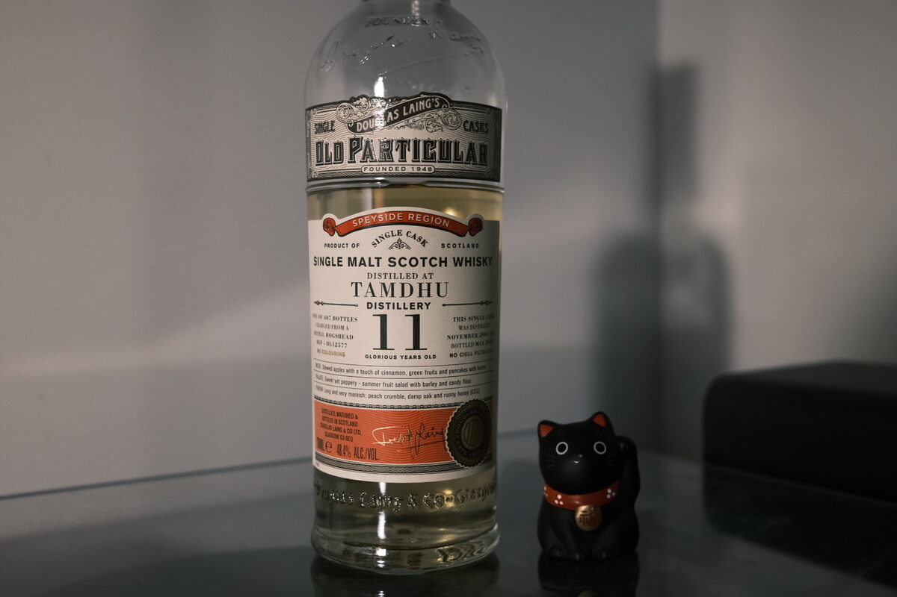

Tamdhu 2006 Douglas Laing 11 years 48.4% (refill hogshead)
The next Old Particular – Tamdhu! The Can-dhu spirit (TM)! Love that little marketing line. Reference DL12577. Anyway, this one’s bare: not a hint of sherry…
Colour Straw.
Nose Juicy. Fruity white wine and fresh grapes. Very bright. Quite sweet, too. Stewed apples and cinnamon. There’s a leafiness to this, half floral, half, well, leafy. Honey and lemon tea. With a little bit of water this turns into a complete caramel monster! Tiramisu! Papaya! Cream and macadamia nuts. some desiccated coconut. Ginger?
Palate Creamy and loaded with lemons. Into the malt, thick, a drizzle of honey. Quite sweet, caramel, almost like a candy bar! Twix? A bubblegum fruitiness too. Dried pawpaw. Some coconut. Tropical!
Finish Spicy: cinnamon and cloves. Vanilla and whipped cream. Waffles. Honey, malty, pancakes. Tropical fruits: bananas, papaya, mangoes. Long.
Comments So lovely to drink a refill hoggy Tamdhu! Fresh sweetness with a tropical spin. Malty and great acidity. Everything works so well. 87/100.

Posted by Dominic on 13 May 2021